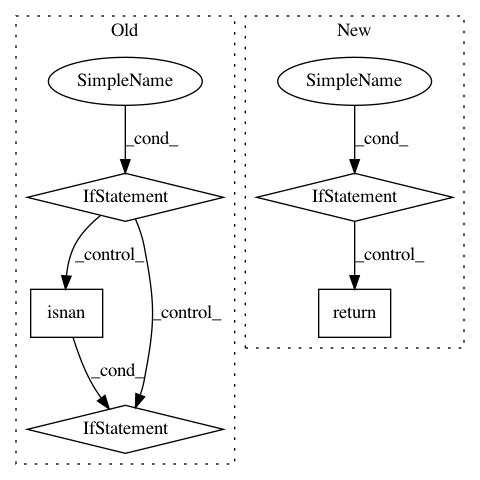

e139774089d7a49df522f9bbb9e942ce3b3c325e,Orange/widgets/unsupervised/owdistancematrix.py,DistanceMatrixModel,color_for_label,#DistanceMatrixModel#Any#Any#,69
Before Change
def color_for_label(self, ind, light=100):
color = Qt.lightGray
if isinstance(self.variable, ContinuousVariable):
color = self.label_colors[ind].lighter(light)
elif isinstance(self.variable, DiscreteVariable):
value = self.values[ind]
if not isnan(value):
color = QColor(*self.variable.colors[int(value)])
return QBrush(color)
def color_for_cell(self, row, col):
return QBrush(QColor.fromHsv(120, self.colors[row, col], 255))
After Change
columnCount = rowCount = dimension
def color_for_label(self, ind, light=100):
if self.label_colors is None:
return Qt.lightGray
return QBrush(self.label_colors[ind].lighter(light))
def color_for_cell(self, row, col):
return QBrush(QColor.fromHsv(120, self.colors[row, col], 255))
In pattern: SUPERPATTERN
Frequency: 3
Non-data size: 5
Instances
Project Name: biolab/orange3
Commit Name: e139774089d7a49df522f9bbb9e942ce3b3c325e
Time: 2020-02-06
Author: janez.demsar@fri.uni-lj.si
File Name: Orange/widgets/unsupervised/owdistancematrix.py
Class Name: DistanceMatrixModel
Method Name: color_for_label
Project Name: analysiscenter/batchflow
Commit Name: 327235adabdcdff566ff74413795091353dcfc1f
Time: 2019-10-16
Author: 53620809+cdtn@users.noreply.github.com
File Name: batchflow/models/metrics/utils.py
Class Name:
Method Name: infmean
Project Name: tgsmith61591/pmdarima
Commit Name: ea36b28c92b4f5f8314707051ee936fd2393bfd5
Time: 2019-11-25
Author: tgsmith61591@gmail.com
File Name: pmdarima/utils/array.py
Class Name:
Method Name: diff_inv